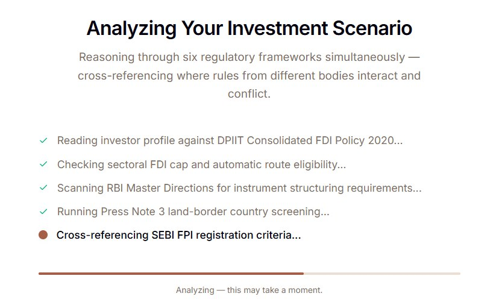
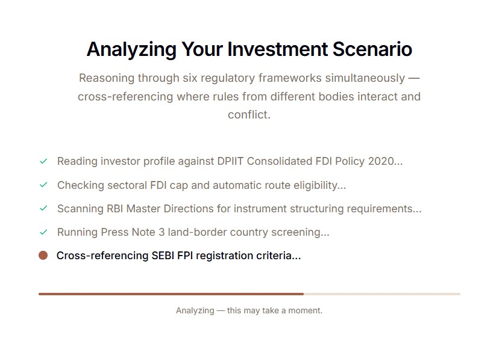

ASAPIntel
The FDI Intelligence Layer for Capital Entering India · ISB AI BuildLab 2026
ASAPIntel turns a foreign investor’s question, “should we invest?”, into a structured regulatory verdict in under 5 minutes, instead of the 4–8 weeks a cross-border advisory engagement usually takes.
Visit live demo
- Context
- Product concept and Phase 1 platform built for the ISB AI BuildLab 2026
- Status
- Phase 1 live at asap-intel.replit.app
Product preview

Context
ASAPIntel is a product concept and Phase 1 platform built for the ISB AI BuildLab 2026, live at asap-intel.replit.app. The product covers the regulatory journey for foreign direct investment into India, drawing on FEMA, the DPIIT Consolidated FDI Policy, Press Notes, RBI Master Directions, SEBI rules and CCI thresholds.
Problem
A foreign company exploring India faces a fragmented entry process with no clear starting point. Before committing capital, it must reconcile several regulators’ rules, so it usually hires a cross-border firm and waits. That delay comes at the point where uncertainty is highest and willingness to spend is lowest. Generic AI tools can explain rules, but they hallucinate on regulatory specifics and leave no audit trail.
My process
Market and competitor mapping
Compared Invest India, Big Four entry advisory, mid-market law firms and generic LLMs to find the gap: paid, personalized and decision-ready.
Case study
Used Google’s $15B Vizag AI Hub, the largest announced greenfield FDI project of 2025, to map one project across nine investment components and six regulators.
Product structure
Organized the journey into four phases: entry eligibility, structuring requirements, compliance timeline, and risks and next steps.
Defensibility analysis
Assessed that RAG over public regulation is replicable, so the moat had to come from an expert-maintained rules layer, proprietary demand data, marketplace liquidity and category brand.
Business model and GTM
Compared transactional, subscription and API revenue, then prioritised partnership-led distribution through CA and CS firms and law firms.
Decisions
Four-phase verdict
Structure the output as a sequence of regulatory decisions, not a free-form chat answer.
Expert-maintained rules over pure AI
Encode PN3 flags, sectoral caps and CCI thresholds in deterministic tables, with LLM synthesis on top.
AI as a Q&A panel, not the gatekeeper
A persistent assistant answers follow-ups using the investor’s own analysis.
Human accountability kept in place
No automated filing execution and no binding AI legal advice. A verified lawyer signs off before anything becomes actionable.
Honest limits
A “what this cannot determine” section tells investors where they still need a lawyer, then routes them to a verified firm.
Pricing that avoids conflicts
Flat software subscriptions for firms, never a percentage of legal fees or per-lead charges.
Rejected
- Relying on generic LLMs as the product, and building an autonomous filing or advice engine, given the regulatory exposure.
Outcome
- Phase 1 is live: The platform is running as a working demonstration, built around the Google Vizag case.
- Value claim: A structured verdict in under 5 minutes, compared with 4–8 weeks through traditional advisory.
- Business model: Demand-side subscriptions (₹3–6L per year), supply-side firm listings (₹1L per year) and a usage-based API. Estimated LLM cost per journey is $0.01–$0.02.
- Roadmap: Target-company health checks using MCA records, a compliance tracker with pre-deadline alerts, and expansion to similar markets such as Indonesia, Vietnam, Brazil and the UAE/Saudi Arabia.
Key lesson
With no technical moat, the value comes from the curated rules layer, the trust design and the network built around the product. Being clear about what the product cannot decide is part of what makes it credible.